大致上，安装 Linux 分为几个阶段：
- 前期准备
通过各种方式获取安装介质，进入安装作业平台。比如下载 ISO 映像刻录光盘，使用光盘引导，启动安装程序
- 选择安装源
选择通过安装介质安装还是通过网络下载的方式进行安装。如果通过网络安装，可能需要配置网络
- 准备磁盘
操作系统最终是安装在磁盘上的，所以要分割磁盘、格式化分区、挂载
- 选择、安装软件包
选择需要的软件。有些发行版如 Ubuntu LiveCD 安装时不能选择软件
- 配置系统
对系统进行各种配置，使其能良好运行
- 安装引导程序
以便启动时可以引导系统
- 新建用户
使用 root 用户进行操作存在一定风险，尽量建立一个用于日常操作的用户
首先下载 Archlinux 安装介质。
有两种安装介质： ISO 和 USB ，其中 ISO 为光盘映像，用来刻录安装光盘； USB 为磁盘映像，可以恢复到 USB 移动存储设备
每种安装介质包含两种目标架构： i686 和 x86_64 ，其中 i686 适用于 奔腾Ⅱ™ 以上级别 CPU ； x86_64 只适用于 64 位 CPU
每种目标架构又包含两个版本： CORE 和 FTP Install ，其中 FTP Install 只包含作业平台，需要通过网络下载软件包；CORE 除了作业平台，还包含基本系统[75]
假设您下载了 archlinux-2008.06-core-i686.iso ，刻录并使用它引导，您会看到以下界面
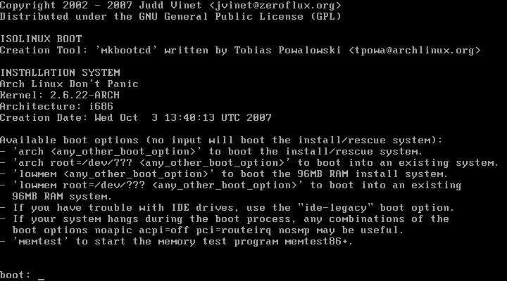
Archlinux 提供几种不同的引导选项，你可根据自己需要选择。一般情况下，按回车即可。
稍等片刻，Archlinux 引导进入这个画面
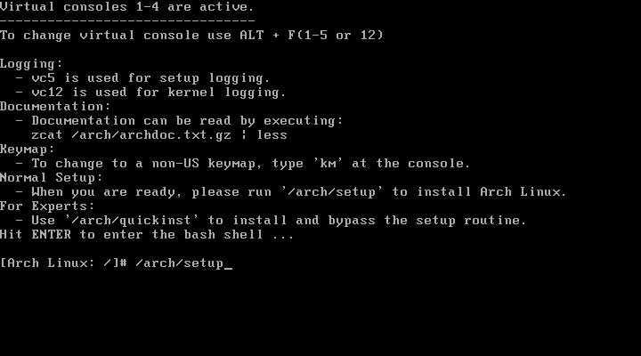
该画面包括一些有用的安装信息，如安装日志的记录、文档的查看、键盘映射的更改等。我们直接在命令提示符后输入下列指令，启动 Archlinux 安装程序：
/arch/setup
/arch/setup 是在安装介质中 FreeBSD 风格的安装脚本，安装 Archlinux ，其实就是进入作业平台后，运行这个脚本。
使用 Archlinux 安装光盘引导，就是进入作业平台的过程。作业平台通常包含：
- 内核
作业平台需要可以使用其它工具，正在运行着的系统是起码的条件，这就需要有内核
- 磁盘工具
将系统安装到磁盘上，必然要对分区进行相关操作
- 网络工具
现代 Linux 系统大都支持通过网络安装，各种网络工具也是必需的
- 包管理系统
-
在安装过程中，如果希望选择软件，通常需要包管理系统
否则就只能将预先打包的整个系统一古脑的恢复到机器上，且不能选择软件，如 Ubuntu LiveCD
- 编译工具链
如果采用编译的方式安装，则需要编译工具链，如 Gentoo LFS
- 基本工具集
以上组件可能会依赖其它的工具，而且安装光盘通常也被当作系统维护光盘，所以基本工具集是必需的
/arch/setup 脚本(安装程序)将在“字符图形”界面中调用上述工具:
接下来进入 Archlinux 安装主菜单。
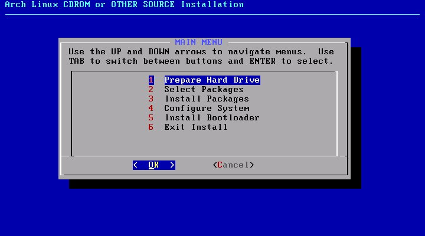
现在需要准备硬盘，即对硬盘分区和挂载文件系统，相关基础概念请参阅 “分区概念”一节
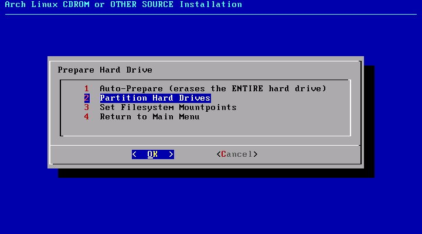
- 自动分区(强烈不推荐)
- 对硬盘分区
- 设置挂载点
- 返回主菜单
安装程序会自动检测硬盘类型及容量，要求你选择硬盘，并调用硬盘分区程序 cfdisk
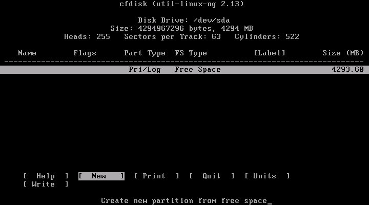
- 通过“上下方向键”选择分区，“左右方向键”、“TAB”或“首字母大写”切换操作选项
- New 创建分区，需要在 “Free Space”上操作
- Bootable 设置可引导标志
- Write 将分区方案写入分区表
推荐为以下目录建立分区：
- /
根目录。系统将安装在这里，通常 5～10G 足够
- /home
用户家目录。用户的所有文件都在这里，尽可能的大
- swap
交换分区。物理内存的1～2 倍(如果内存足够大，也可以不建立此分区)
建立好分区后，将根目录所在的分区设置为 Bootable[76]
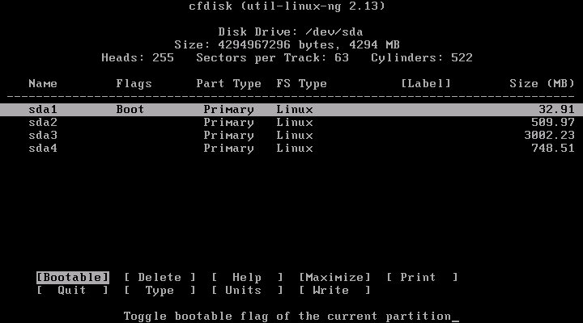
准备妥当后，按下 W
写入分区表，Q 退出
分割磁盘后，选择 DONE 返回准备硬盘菜单。接着，我们选择 Set Filesystem Mountpoints 来将分区挂载到文件系统上。
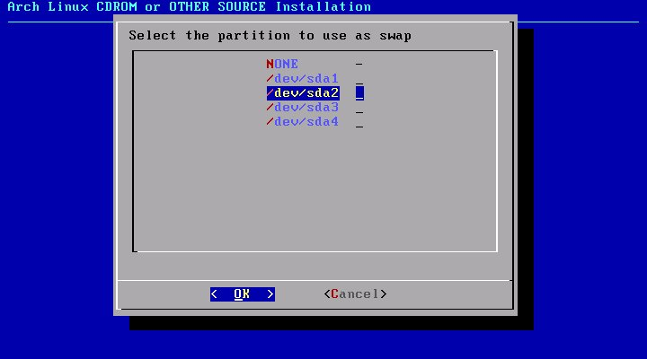
首先要求你挂载 swap ，我们选择 /dev/sda2。然后依次挂载 / 和 /home 目录。与挂载 swap 区不同的是，挂载后几个分区会要求你选择文件系统类型，推荐选择 XFS[77]。另外，挂载 /home 时，需要自己输入挂载点，按原名输入即可。
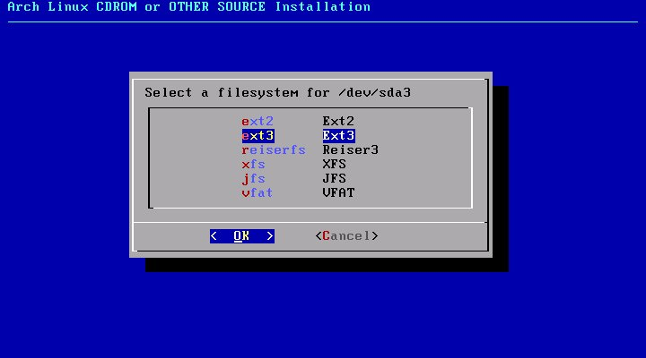
完成后，返回安装程序主菜单。
接下来选择要安装的软件包。Archlinux 首先会要求选择安装介质，因为我们是从 CD-ROM 进行安装，所以保持默认。然后，我们选择 CD 驱动器，仍然默认。最后，选择软件包
软件包有四大类：
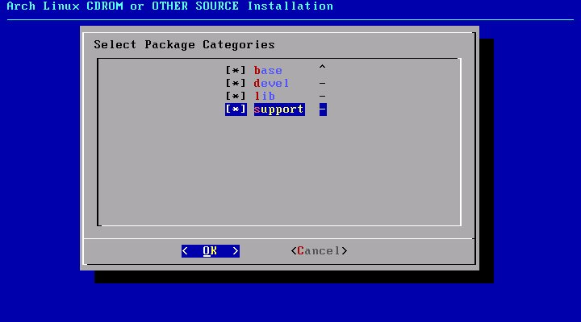
- base
最基本的包
- devel
包含一些软件编译工具
- lib
包含应用程序所需的库文件
- support
包含一些在网络和文件系统方面有用的包
使用空格键 标记/取消标记。当 Archlinux 安装程序提示你是否默认选中所有的包时，按 Yes 后会进入已标记分类包含软件的选择菜单，完成后按 OK 确认。

在开始安装前，安装程序将提示你是否保存 Pacman 缓存的软件包，我们选择 No。安装将调用 Pacman 安装你所选择的包，这个过程需要花一会时间。
现在，我们将进入 Archlinux 安装过程中的一个重要环节，配置系统文件。Archlinux 安装程序先会询问是否使用 hwdetect，按推荐选择 Yes，并回答是否需要支持从 usb、firewire、pcmcia 等设备引导。
之后，我们需要选择文本编辑器，可选 nano 和 vim，选择后者。然后，我们就到了如下的配置画面：
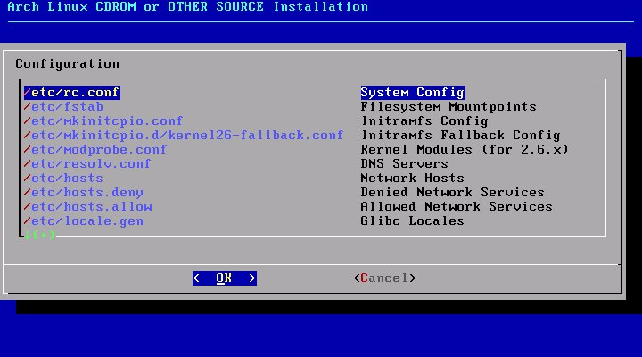
配置的过程就是调用 Vim[78] 编辑器编辑以上配置文件。其中，需要重点关注的配置文件是：
/etc/rc.conf 是 Archlinux 最重要的配置文件。下面的选项有必要设置一下：
| 推荐值 | 可选值 | 说明 |
|---|---|---|
| LOCALE="en_US.utf8" | zh_CN.utf8 | 系统语言 |
| TIMEZONE="Asia/Shanghai" | UTC[a] | 时区 |
| HOSTNAME="myhost" | linuxtoy.org | 主机名 |
| MODULES=() | !pcspkr | 禁用扬声器 |
| INTERFACES=(eth0) | 网络接口 | |
| eth0="dhcp" | eth0 IP地址 netmask 子网掩码 broadcast 广播地址(该IP段最后一个地址“255”) | 接口地址设置 |
| DAEMONS=(syslog-ng !network netfs crond) | 守护进程以 ! 起始表示禁用，以 @ 起始表示后台运行 |
启动时运行的守护进程 |
[a] 如果安装了 Windows 系统，使用 UTC 可以避免各个系统时间不一致 | ||
系统配置完成后，回到主菜单。进入下一步，安装系统引导程序。我们选择 GRUB 。此时，安装程序让你查看 /boot/grub/menu.lst 的内容。接着，要求选择安装的位置，我们选 MBR，主引导记录
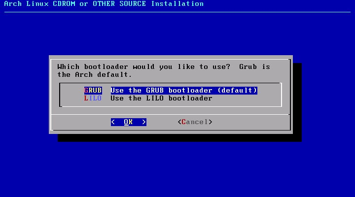
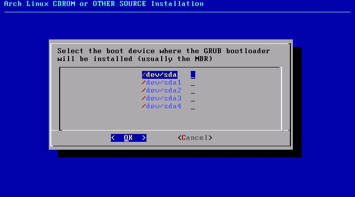
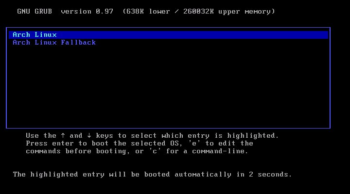
重启系统后，输入 root 帐号和密码登录系统。
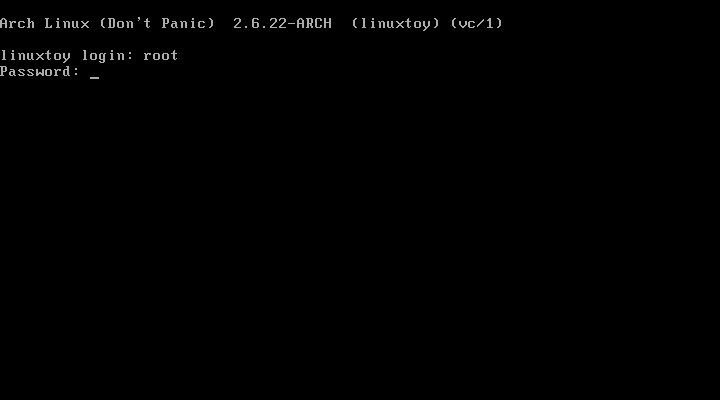
第一件事，建立一个普通的帐号。可以通过以下命令完成：
useradd -m -s /bin/bash kardinal
这将添加一个名为 kardinal 的用户。接着，为该账号设置密码：
passwd kardinal
使用 visudo 命令将该账号加入 sudoers 列表
确认无误后，可以锁定 root 账号，以绝后患
su kardinal #切换到普通账号，如果能够锁定，说明这个账号是 sudoers
sudo usermod -L root
至此，Archlinux 基本系统安装完成
[75] 将 CORE 中的软件包移除，差不多就是 FTP Install
/boot
目录准备了独立的分区，则要将该分区设置为 Bootable[77] 大多数 Linux 系统中的引导程序
grub，不支持从 XFS
分区启动，解决的办法是将 /boot
目录挂载到一个独立的 ext2 分区……不过 Archlinux 中的 grub
不存在这个问题
传说 ext4 文件系统也十分优秀，不过大多数发行版还没有正式支持
[78] 参阅第 24 章 Vim 编辑器